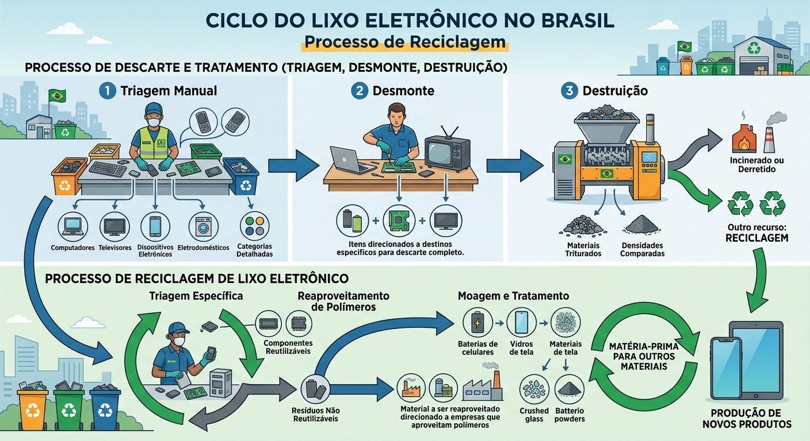

De acordo com levantamento feito pela Organização das Nações Unidas (ONU) em 2016, a população mundial gera uma quantidade de lixo eletrônico que cresce 8% ao ano. Isso significa que 66% da sociedade mundial é capaz de produzir mais de 40 milhões de toneladas de lixo eletrônico por ano. Essas toneladas, carregadas de substâncias nocivas ao público, são capazes de destruir o meio ambiente, desestruturar ecossistemas e ainda ocasionar doenças a pessoas e animais.
É necessário que haja uma atenção especial ao descarte adequado de lixo eletrônico, de modo a contribuir para a preservação ambiental por meio da reciclagem e da redução do lixo acumulado. A coleta do lixo eletrônico é um passo essencial para que a reciclagem deste tipo de lixo seja possível, além de ser uma excelente forma de estimular práticas sustentáveis associadas ao uso de aparelhos eletrônicos.
No Brasil, existem locais corretos para se realizar o descarte de resíduos de equipamentos eletroeletrônicos. Os comerciantes e distribuidores são responsáveis por receber estes equipamentos e entregar aos fabricantes e importadores. Por fim, eles são responsáveis por assegurar a destinação final ambientalmente adequada a estes equipamentos, como a reciclagem.
A triagem normalmente é feita manualmente, separando e especificando cada tipo de lixo. Computadores, televisores, dispositivos eletrônicos, eletrodomésticos e outros utensílios precisam se encaixar em categorias detalhadas.
O desmonte é a parte em que todo o material eletrônico é desestruturado, das partes maiores às menores. Todos os itens são direcionados a destinos específicos para que o descarte seja completo.
Com a separação feita, todos os componentes do lixo eletrônico são triturados e separados para haver uma comparação de suas densidades. A princípio, o lixo eletrônico pode ser incinerado ou derretido dependendo da composição dos materiais. Mas outro recurso importante que vem tomando destaque é a reciclagem.
O processo de reciclagem de lixo eletrônico também inclui as etapas de triagem, desmonte e destruição, mas a fase da triagem possui objetivos um pouco diferentes: é feita a separação dos componentes que ainda podem ser reutilizados e os que não podem ser usados.
O material a ser reaproveitado passa por outro tipo de triagem para que os resíduos sejam direcionados a empresas que aproveitam os polímeros desses materiais. Baterias de celulares, vidros de tela e outros componentes são moídos, tratados e utilizados como matéria-prima para produção de outros materiais.
